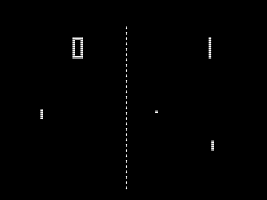
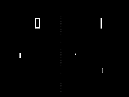
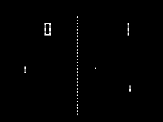
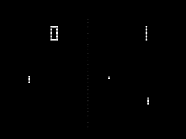

 

A számítógépes játékok története a számítógépekével közel azonos időre vezethető vissza. Az első programozók csak a maguk szórakoztatására vagy a számítógép képességeinek demonstrálására készítették számítógépes játékprogramjaikat. Később jelent meg az üzlet lehetősége, ami önálló iparrá tette a számítógépes játékgyártást. A számítógépekben rejlő lehetőségek bemutatására készített játékprogramok mind a mai napig fontos színterei a fejlesztéseknek. Gondoljunk csak a sakkozógépre. A Deep Blue az IBM által kifejlesztett számítógép, amely sakkjátékban 1997-ben egy szabályszerű hatjátszmás páros mérkőzésen 3,5-2,5 arányban legyőzte Garri Kaszparovot, az emberi sakkozás akkori világbajnokát. A cél az volt, hogy bemutassák, a számítógép nem úgy gondolkozik, ahogy az ember, de a nyers számítási erő képes speciális esetekben az emberi gondolkodással vetekedni.
Napjaink számítógépes játékainak egyik csoportosítása: